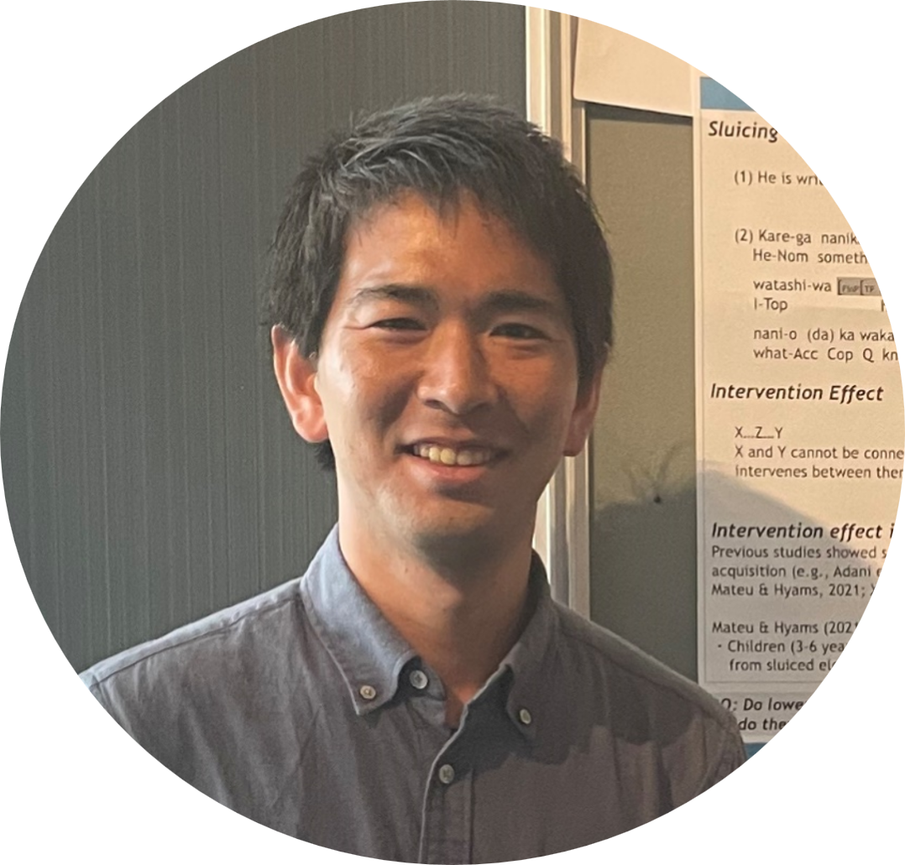

Atsushi Miura

I am a PhD student at Waseda University (Japan). I
study Second Language Acquisition and Second Language Processing.
My CV can be downloaded here (last updated: 11 September 2024).


Research interests
 Second Language Acquisition
Second Language Acquisition
 Event-related Potential (ERP)
Event-related Potential (ERP)
Education
 2024 - Present PhD student, Waseda University,
Japan.
2024 - Present PhD student, Waseda University,
Japan.
Supervisors: Dr. Shiro Ojima
 2018 - 2020 Master of Arts, Kanagawa University,
Japan.
2018 - 2020 Master of Arts, Kanagawa University,
Japan.
Dissertation supervisor: Dr Maki Yamane
 2014 - 2018 Bachelor of Arts, Kanagawa University,
Japan.
2014 - 2018 Bachelor of Arts, Kanagawa University,
Japan.
Thesis supervisor: Professor Kazuyuki Takahashi
icons by Icons8